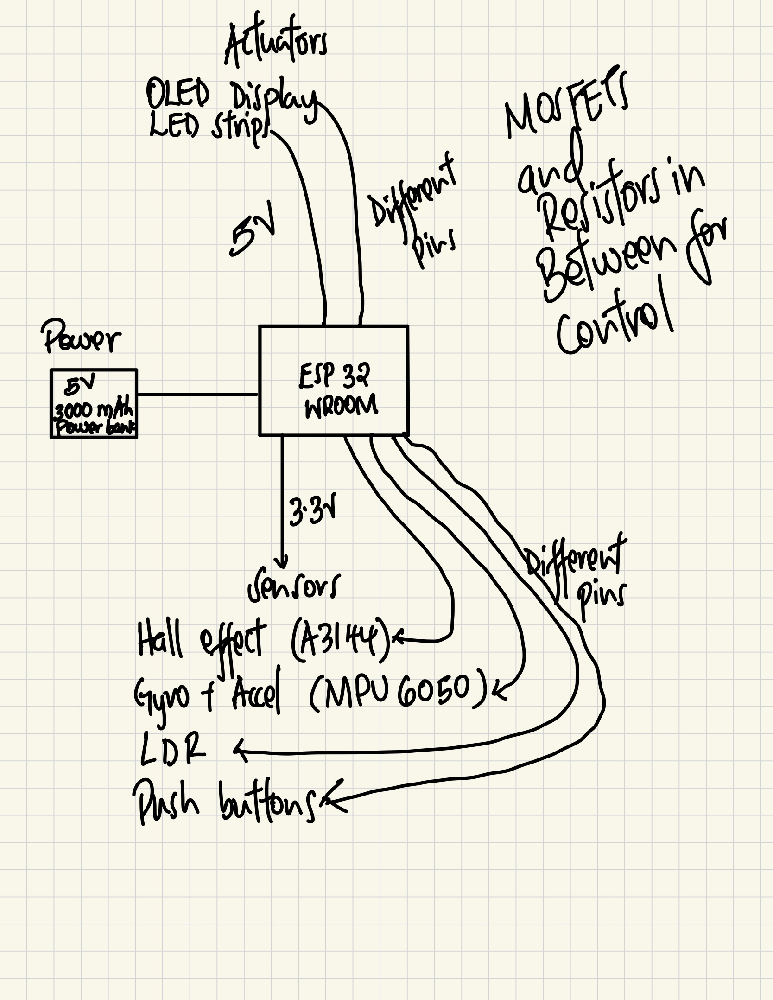

<div class="textcontainer">
<p class="margin"></p>
<h3 class="title">Final Project: Smart Cycling Companion!</h3>
<br>
<h4 class="title">Project Introduction</h4>
<p>
The Smart Cycling Companion is a custom-built, technology-enhanced system designed to improve safety, convenience,
and usability for cyclists. The system integrates turn signals, speed monitoring, and automatic lighting adjustments,
all controlled by an ESP32 microcontroller. <br>
I chose this project one, because of a personal passion for cycling and two because it will give me the opportunity
to apply to a practical real-world problem my Electrical Engineering skills, while gaining design skills.
</p>
<h4 class="title">How It Works</h4>
<p>
1. Turn Signals with Auto-Off Feature: Handlebar-mounted buttons allow the cyclist to signal turns. A motion and tilt
sensor (MPU6050) detects when a turn is completed and automatically turns off the signal. <br>
2. Speed Monitoring & Display: A Hall effect sensor measures wheel rotation to calculate speed. The speed is displayed
on a water-resistant LED screen mounted on the handlebars. <br>
3. Automatic Light Adjustment: A light sensor (LDR) detects ambient lighting conditions. LED brightness automatically
adjusts for better visibility in low-light conditions. <br>
4. Power & Durability: Powered by a 5V USB power bank, ensuring easy recharging. The system is housed in a 3D-printed
waterproof enclosure, designed to withstand outdoor cycling conditions.
</p>
<h4 class="title">Why This Project Matters</h4>
<p>
- Enhanced Safety: Clear turn signals improve visibility for other road users. <br>
- Hands-Free Automation: Auto turn-off signals reduce the need for manual operation. <br>
- Real-Time Feedback: Speed tracking allows cyclists to monitor their performance. <br>
- It's fun way to gain engineering and design skills!
</p>
<h4 class="title">3D Model</h4>
<p>
I am yet to create a 3D model as I couldn't figure out
which software was best for illustration. I am used to LTspice but
it does not have most sensors, actuators or the ESP32 microntroller.
I may try to do this in fusion but this is a new software for me and
the designing will take a while. Below see atteched a very rough sketch with components. I
will update this page with the 3D model once I have it.
</p>
<div class="d-flex justify-content-center">

</div>
<br>
<h4 class="title">Bill of Materials (BOM)</h4>
<div class="container mt-3">
<table class="table table-bordered" style="color: white;">
<thead style="background-color: #dc143c; color: white;">
<tr>
<th>Component</th>
<th>Quantity</th>
<th>Approximate Cost</th>
</tr>
</thead>
<tbody>
<tr style="background-color: #333333; color: white;">
<td>ESP32 Dev Board</td>
<td>1</td>
<td>$10</td>
</tr>
<tr style="background-color: #444444; color: white;">
<td>Custom PCB</td>
<td>1</td>
<td>$10</td>
</tr>
<tr style="background-color: #333333; color: white;">
<td>Hall Effect Sensor (A3144)</td>
<td>1</td>
<td>$2</td>
</tr>
<tr style="background-color: #444444; color: white;">
<td>MPU6050 (Accelerometer + Gyroscope)</td>
<td>1</td>
<td>$5</td>
</tr>
<tr style="background-color: #333333; color: white;">
<td>Light Sensor (LDR)</td>
<td>1</td>
<td>$1</td>
</tr>
<tr style="background-color: #444444; color: white;">
<td>Push Buttons (Waterproof)</td>
<td>3</td>
<td>$5</td>
</tr>
<tr style="background-color: #333333; color: white;">
<td>Water-Resistant LED Display</td>
<td>1</td>
<td>$30</td>
</tr>
<tr style="background-color: #444444; color: white;">
<td>LED Strips (Amber, 12V)</td>
<td>2</td>
<td>$15</td>
</tr>
<tr style="background-color: #333333; color: white;">
<td>MOSFETs</td>
<td>2</td>
<td>$2</td>
</tr>
<tr style="background-color: #444444; color: white;">
<td>5V USB Power Bank</td>
<td>1</td>
<td>$20</td>
</tr>
<tr style="background-color: #333333; color: white;">
<td>USB Cable</td>
<td>1</td>
<td>$5</td>
</tr>
<tr style="background-color: #444444; color: white;">
<td>3D Printed Enclosure</td>
<td>1</td>
<td>$10</td>
</tr>
<tr style="background-color: #333333; color: white;">
<td>Miscellaneous (Resistors, PCB Headers, Wires, Heat Shrink, etc.)</td>
<td>Various</td>
<td>$10</td>
</tr>
</tbody>
<tfoot style="background-color: #555555; color: white;">
<tr>
<th>Total Estimated Cost</th>
<td colspan="2">$180 - $220</td>
</tr>
</tfoot>
</table>
</div>
<h4 class="title">Project Timeline</h4>
<p>
This is a rough timeline of what I plan to do for the project. I will update this page as I progress. My class
assignments going forward may revolve around this project and its obejctives.
</p>
<P>
This Week: I will begin by 3D modeling and printing the enclosure that will house the
ESP32 microcontroller and the power source.
</P>
<P>Week 6: Test the sensors I am planning to use to get familiar. Particularly
Hall effect and LDR sensors. <br>
</P>
<p>
Week 7: Test the actuators and the buttons. I will try to take input
from the microcontroller and display it on the screen and also use input
from sensos in week 6 to make Leds on or off <br>
</p>
<p>
Spring Break: Complete the full 3D model for my project <br>
</p>
<p>
Week 8: Start working on the PCB design and the code for the project. <br>
</p>
<p>
Week 9 onwards: Put it all together and start testing. I may also
develop custom parts to attach to bike <br>
</p>
</div>